Taming Enterprise Cloud, One Pixel at a Time
Strategic UX case studies showing how I turned complex Salesforce ecosystem workflows into simple, elegant digital products.
Teaming Agreement
Digitised multi-region strategic contracts from Quip into native Org62 objects, establishing a single source of truth and adding proactive visual alerts across Accounts and Opportunities.
Consumption Plan
Replaced manual spreadsheet tracking with a native Org62 experience that combines progressive disclosure, guided empty states, and real-time KPI visualisations to drive adoption. Shipped live and presented at Config London 2025.
Activity Editor
Reduced admin friction for Solution Engineers by bridging Google Calendar and Salesforce across Slack and Web, using GCal colour-matching and A/B-tested confirmation patterns.
Account Planning Agent Experience
Prototyped a seamless Slack-to-Org62 agentic workflow that uses Gemini-powered research to turn manual, hand-authored account planning into an automated AI experience ahead of CKO planning cycles.
CQI Tool
The pre-quoting process was manual and fragmented. I designed the CQI layout with in-line guidance banners, FMV Capture Ratio and Commercial Terms Score modules with error/warning states, and a Scenario Editing flow, ordering the page as guidance, then score, then detail.
View Case Study
on clarity and real-world use
Curious by nature, builder by practice. I love diving headfirst into unfamiliar tools and complex problems, figuring out what makes them tick and turning ambiguity into momentum.
Born and raised in sunny St Croix (USVI), I moved to England in 2012 to pursue Digital Design. University was where my general curiosity sharpened into a focused obsession with UX/UI design.
Since then, I have refined my skills through real world impact, growing from targeted internships into a full time design role at Salesforce where I build intuitive, user centred digital products.
Side projects, weekend hobbies, and the non-design things fuelling my creativity
A peek into how I show up for my team, handle complex challenges, and support those around me.
Work Experience

Tools powering my work

Figma & FigJam

Claude Code

Adobe Illustrator

Adobe Photoshop

Google Workspace

Google AI Studio & Stitch

Gemini & NotebookLM

UserTesting

Slack
Skills
Education

BSc (Hons) Digital Design at Brunel University London
BTEC Level 3 Ext. Diploma in IT at Uxbridge College
Digitising Multi-Region Seller Contracts
Digitised multi-region strategic contracts from Quip into native Org62 objects, establishing a single source of truth and adding proactive visual alerts across Accounts and Opportunities.
Teaming Agreements are contracts sellers enter into whenever they share a multi-region account, for example Disney US, Disney Europe, and Disney Japan all under one umbrella deal. This project digitised those agreements, moving them from Quip documents into structured Org62 objects.
Only a small number of high-value Org62 accounts (Disney, Amazon, Google, and similar strategic accounts) have a Teaming Agreement attached, but the existing process created real risk on both sides.
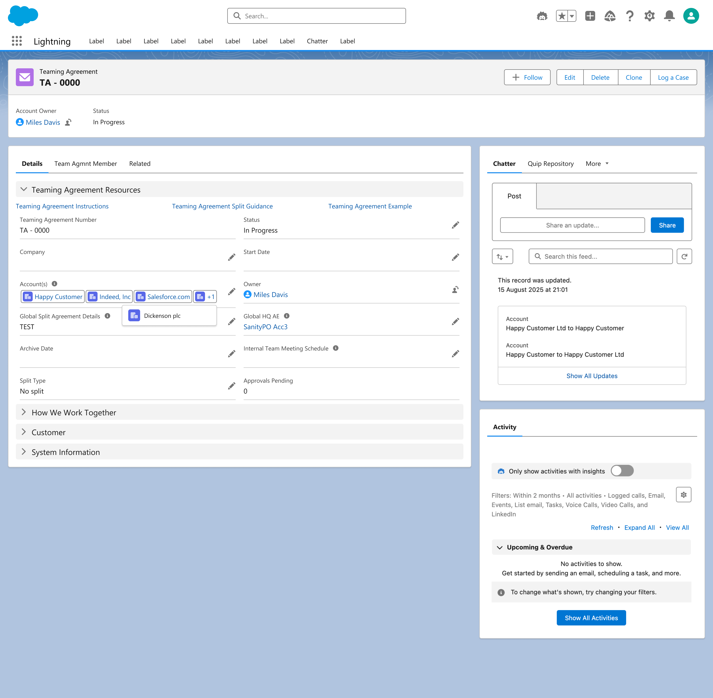
Screen 1 (Multi-Account Association): Enables sellers to link multiple account records to a single Teaming Agreement for seamless cross-account visibility and data reflection.
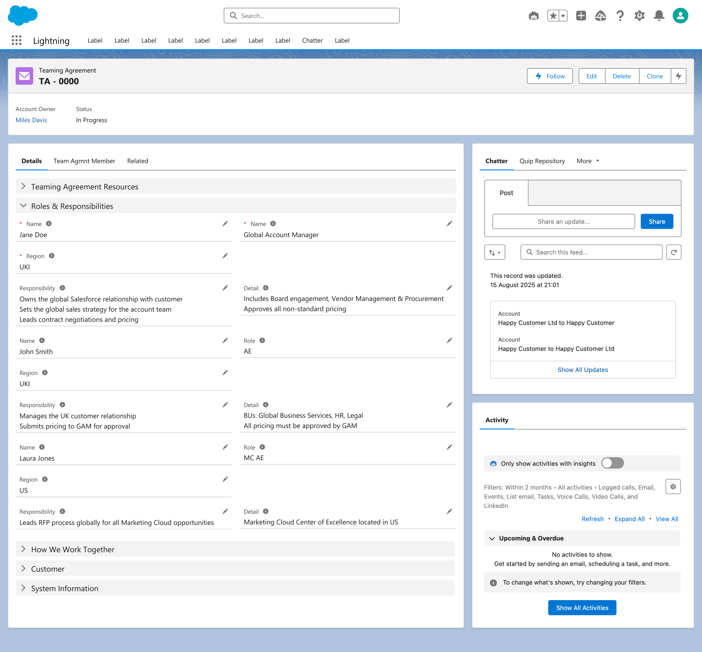
Screen 2 (Roles & Responsibilities): Captures team member roles, regions, and specific duties directly on the record without disturbing downstream approval workflows.
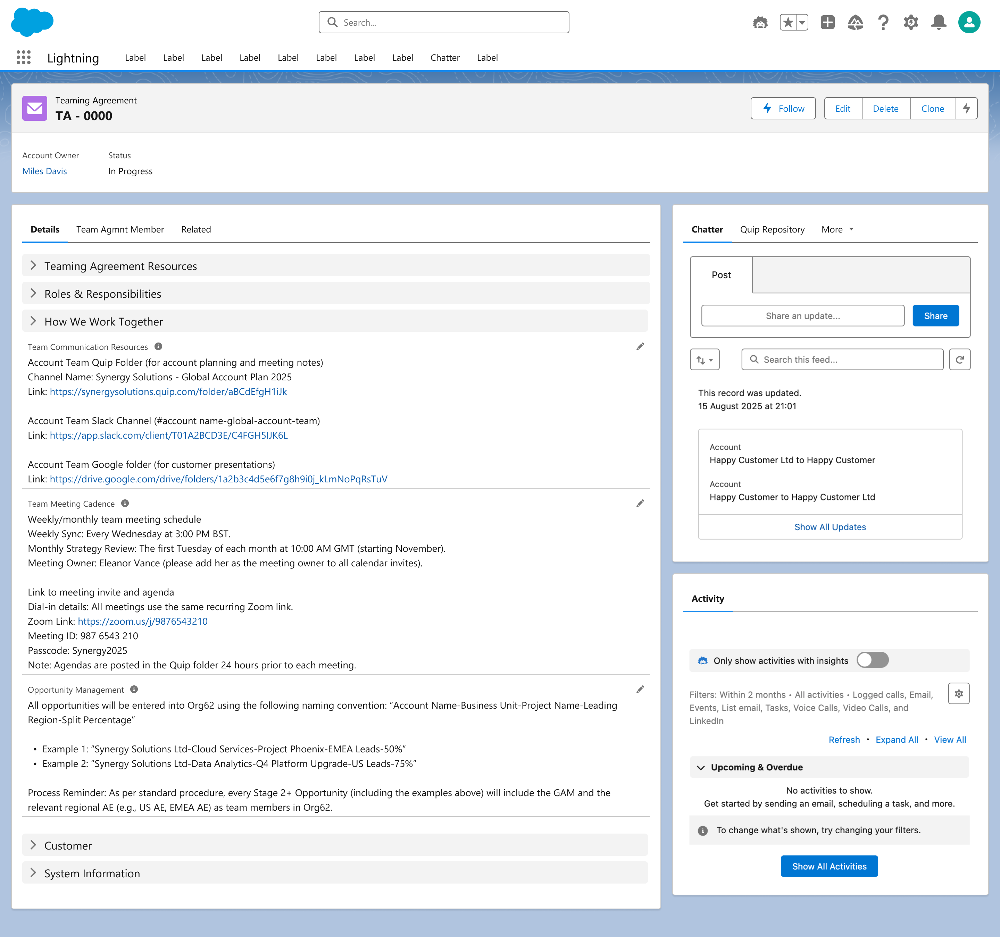
Screen 3 (How We Work Together): Centralises team communication links, meeting cadences, and opportunity naming conventions into a unified rules-of-engagement section.
Designing for internal operational tools is a different discipline from consumer-facing design. The business logic is complex, and edge cases matter just as much as visual polish.
Successfully eliminating parallel sources of truth by replacing fragmented Quip documents with a structured Org62 workflow. This provided sellers with immediate visibility into active multi-region deals while earning full alignment and satisfaction from both business and engineering stakeholders.
Replacing Spreadsheets with Native Usage Tracking
Replaced manual spreadsheet tracking with a native Org62 experience that combines progressive disclosure, guided empty states, and real-time KPI visualisations to drive adoption. Shipped live and presented at Config London 2025.
Consumption Plans track Agentforce and Data Cloud usage for Account Executives. This project moved that tracking out of manual Google Sheets and into Org62, giving product owners a single, unified in-account view.
Consumption tracking lived in spreadsheets, disconnected from the account record itself, prone to version drift, and offering no real-time visibility for product owners. The team needed a native Org62 experience that could replace the spreadsheet entirely without losing the flexibility people were used to.
The core challenge was behavioural, not visual: helping AEs and product owners let go of a tool they were already comfortable with (however manual) and trust a new system. That meant every empty state, tooltip, and data-entry interaction had to actively build confidence rather than just look polished.
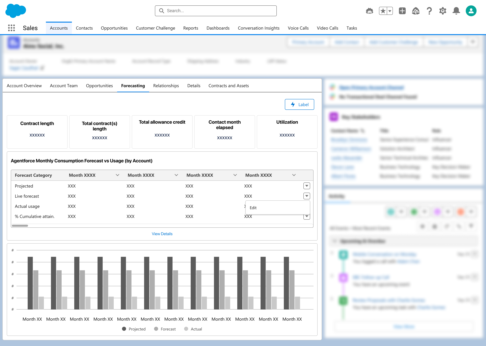
Screen 1 (Forecasting Overview): KPI summary cards paired with a monthly forecast vs usage table and bar chart, giving product owners an at-a-glance read on tracking progress.
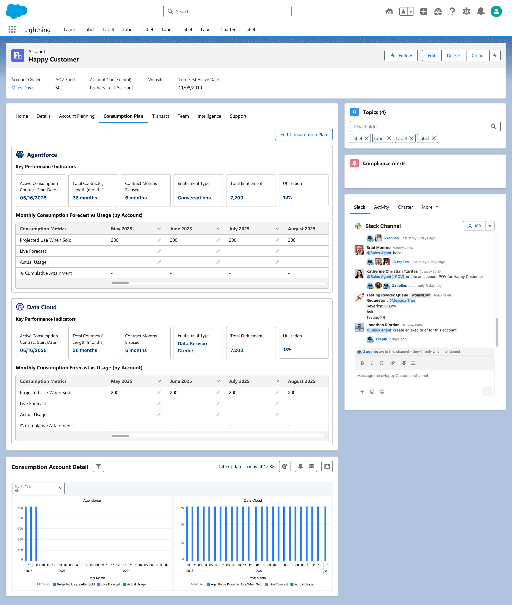
Screen 2 (Consumption Plan Tab): Agentforce and Data Cloud KPIs and forecast tables live directly on the account record, replacing the disconnected spreadsheet with a native, in-account view.
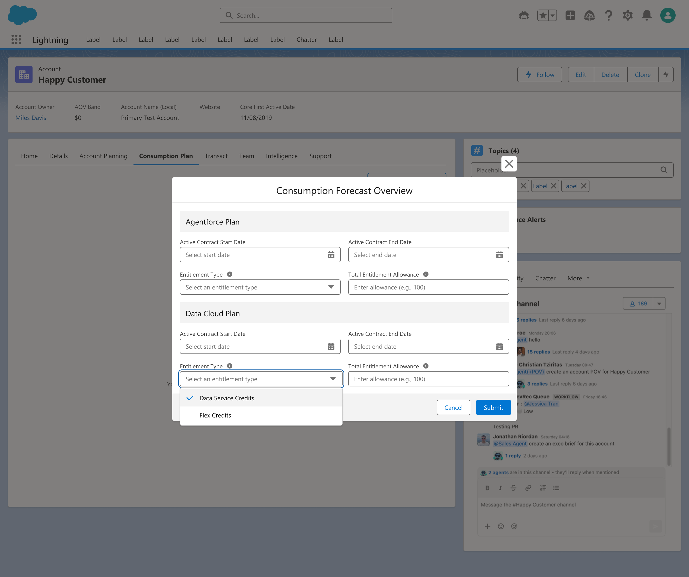
Screen 3 (Edit Consumption Plan): A guided modal for entering contract dates, entitlement type, and allowance, paired with tooltips to reduce ambiguity during data entry.
Empty states and progressive disclosure aren't cosmetic details. They make the difference when onboarding users off a familiar system and onto something entirely new.
I would explore adding predictive usage alerts to proactively flag accounts at risk of under-consuming or exceeding their Agentforce and Data Cloud allocations well before renewal conversations hit. Additionally, I'd investigate surfacing real-time consumption signals inside daily seller communication channels like Slack to meet Account Executives directly in their existing workflow. Finally, I would implement telemetry tracking to measure the permanent drop-off from legacy Google Sheets and confirm total system adoption.
I am proudest of overcoming the steep behavioural challenge of transitioning product owners away from comfortable, manual spreadsheets into a native Org62 application. By leveraging intentional empty states, tooltips, and progressive disclosure flows, we built enough user trust to convert a fragmented tracking routine into a unified, live feature. Ultimately, this project proved that thoughtful micro-interactions are the true engine behind driving complex enterprise change management.
Bridging Calendar Activity into Salesforce
Reduced admin friction for Solution Engineers by bridging Google Calendar and Salesforce across Slack and Web, using GCal colour-matching and A/B-tested confirmation patterns.
Activity Editor is a tool that lets Solution Engineers log their Google Calendar events as Org62 (Salesforce) activities directly from Slack or the Solutions Workspace web app, bridging the gap between calendar activity and CRM data capture. It sits within the Admin & Insights pillar of Solutions Workspace, and today runs as a hybrid Rails + Angular app connecting Google Calendar to Salesforce.
SEs were spending significant admin time manually re-entering calendar events into Salesforce as logged activities, a classic "swivel-chair" problem. Getting SEs to consistently log activities was less a tooling gap and more a behavioural and adoption challenge. The tool had to feel frictionless enough that people would actually use it, and close enough to their existing workflow (Google Calendar) that the transition felt natural.
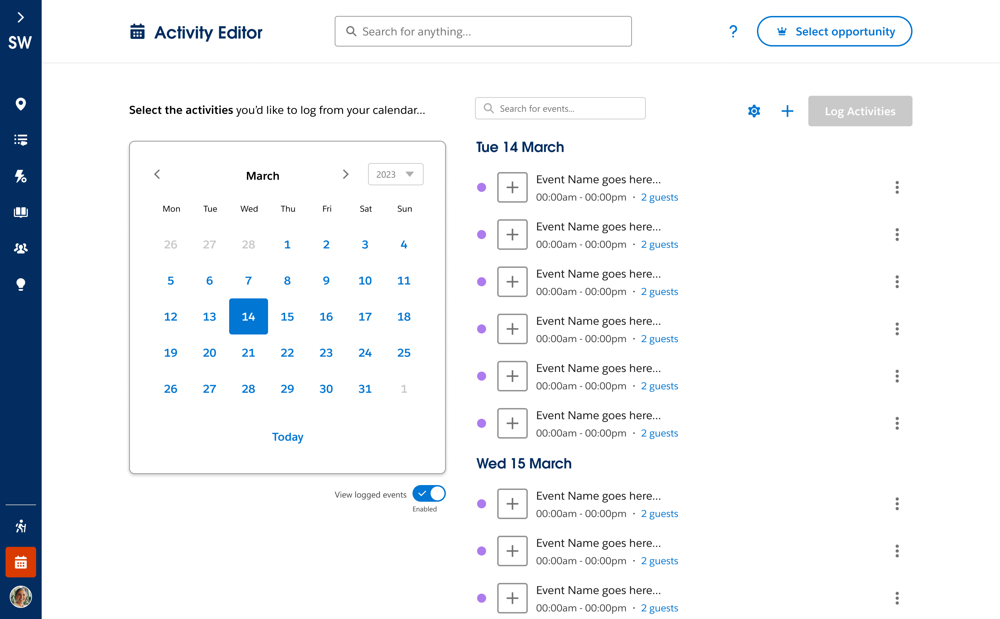
Screen 1 (Select Activities): SEs browse their Google Calendar events in the Solutions Workspace web app and choose which ones to log as Salesforce activities.
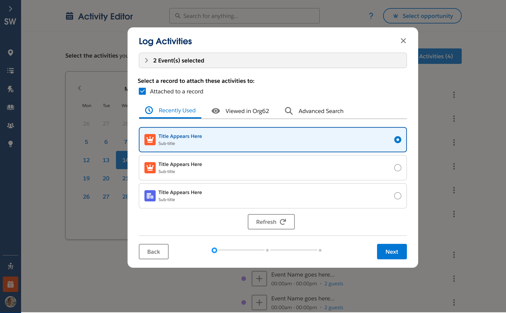
Screen 2 (Attach to Record): A guided modal lets SEs attach the selected events to a recently used, viewed, or searched-for Salesforce record before logging.
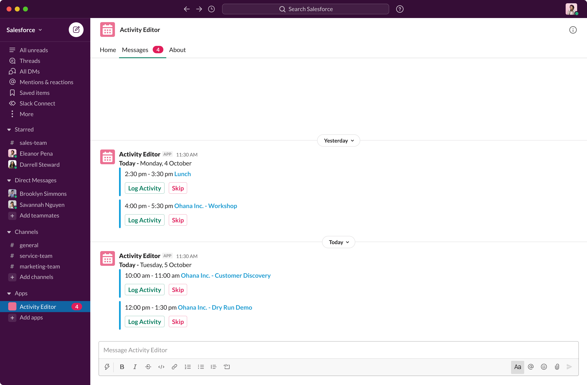
Screen 3 (Slack Prompt): The Slack surface brings the same workflow into an SE's daily habit, surfacing calendar events with one-click Log Activity or Skip actions.
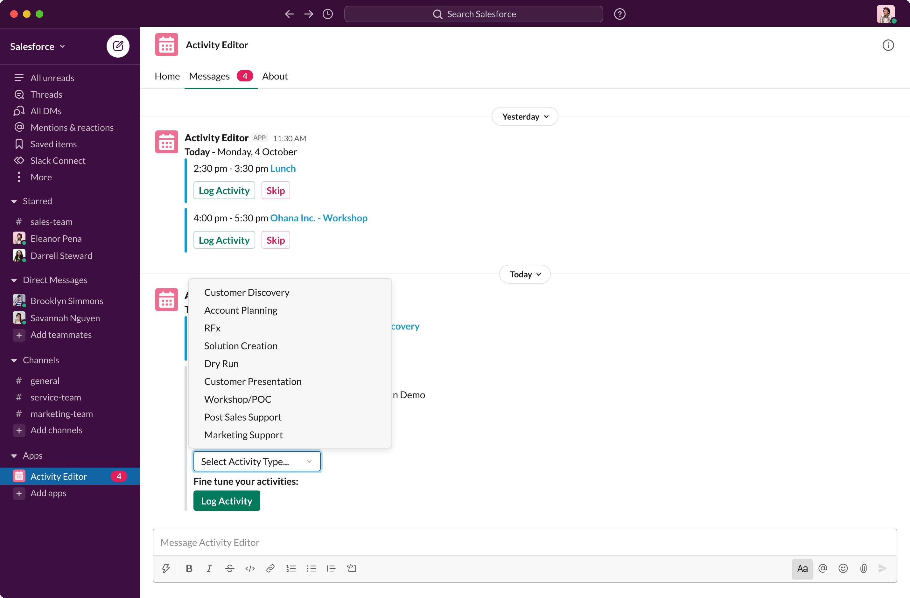
Screen 4 (Fine-Tune Activity Type): SEs can refine the logged activity's type directly in Slack, keeping data structured without leaving the conversation.
Designing for behaviour change is hard, because the product has to earn adoption. Getting the details right, like pulling in GCal colours and pre-setting task types, was the difference between a tool people ignored and one that became part of their daily routine.
I would explore integrating Agentforce capabilities to automatically recommend activity-to-opportunity links, eliminating manual association steps for Solution Engineers entirely. Additionally, I would leverage Mixpanel telemetry to analyse common drop-off points in multi-event logging and further refine our pre-set task defaults. Finally, I would expand interactive Slack notifications so SEs can review and confirm calendar syncs instantly without switching back to the web dashboard.
I am proudest of turning a tedious administrative chore into a seamless daily habit by aligning with existing mental models, such as mirroring Google Calendar colour labels. Validating our confirmation UX pattern through A/B research proved that solving subtle friction points directly increases data capture accuracy. Ultimately, seeing the tool embedded into official SE onboarding and evolving into Activity Editor 2.0 demonstrated its lasting organisational value.
From Manual Authoring to an Agent-Initiated Flow
Prototyped a seamless Slack-to-Org62 agentic workflow that uses Gemini-powered research to turn manual, hand-authored account planning into an automated AI experience ahead of CKO planning cycles.
Account Plan creation in Org62 was fully manual: an AE had to navigate to the account page, click "Start Plan," and hand-author the Seller POV strategy tab from scratch. Working with Keith Mistler and Anna Krevets, I designed a high-fidelity mockup for an agent-initiated alternative: a seller @mentions the Sales Agent directly in Slack, and the agent hands them off into Org62 with the plan already underway.
Two problems compounded each other. First, the Seller POV strategy tab required manual, from-scratch authoring, with no scaffolding, reuse, or assist. Second, the account data populating the first tab came from a third-party source covering only around 20,000 accounts, leaving most of the book of business without a meaningful starting point. Sellers were left to build strategy manually on incomplete data.
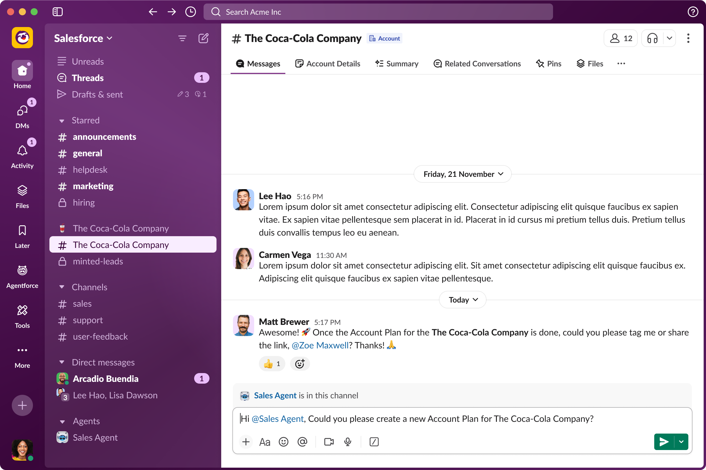
Screen 1 (The @mention): The seller asks the Sales Agent, right in Slack, to create a new Account Plan for the account, no separate tool required.
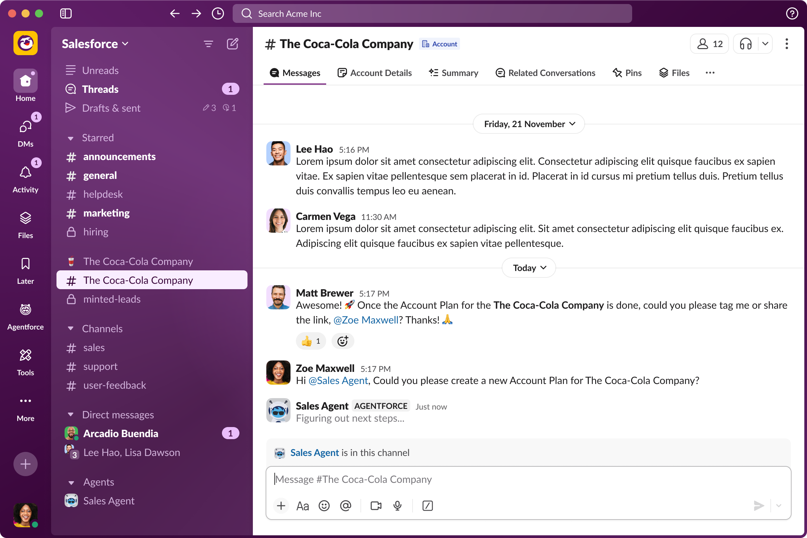
Screen 2 (Agent at Work): The Sales Agent picks up the request and works in the background while the seller keeps going about their day.
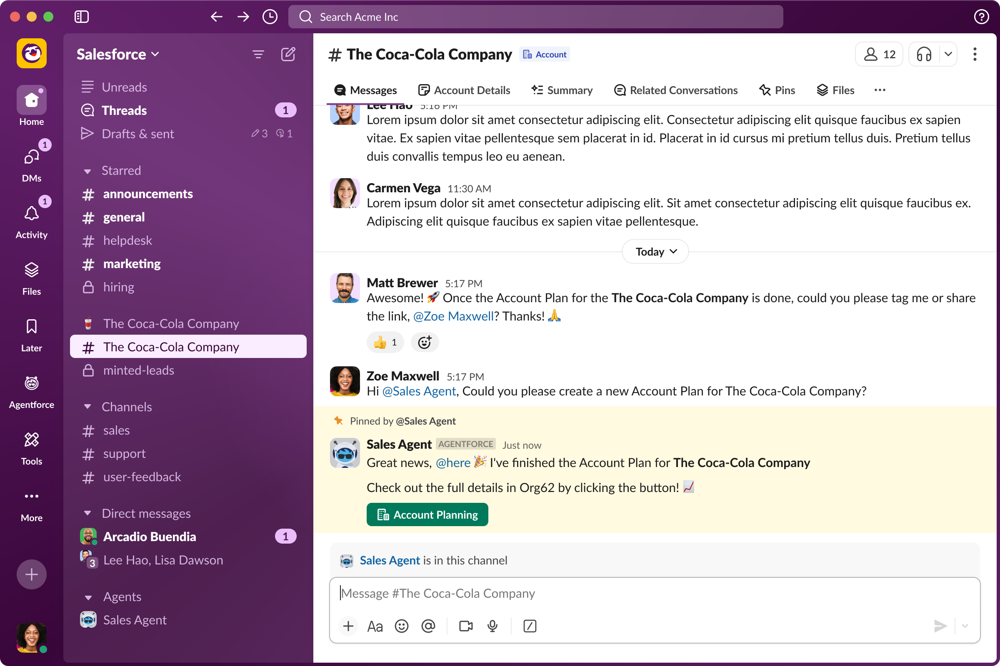
Screen 3 (The Handoff): The agent pins its finished summary to the channel with a one-click button straight into the full plan in Org62.
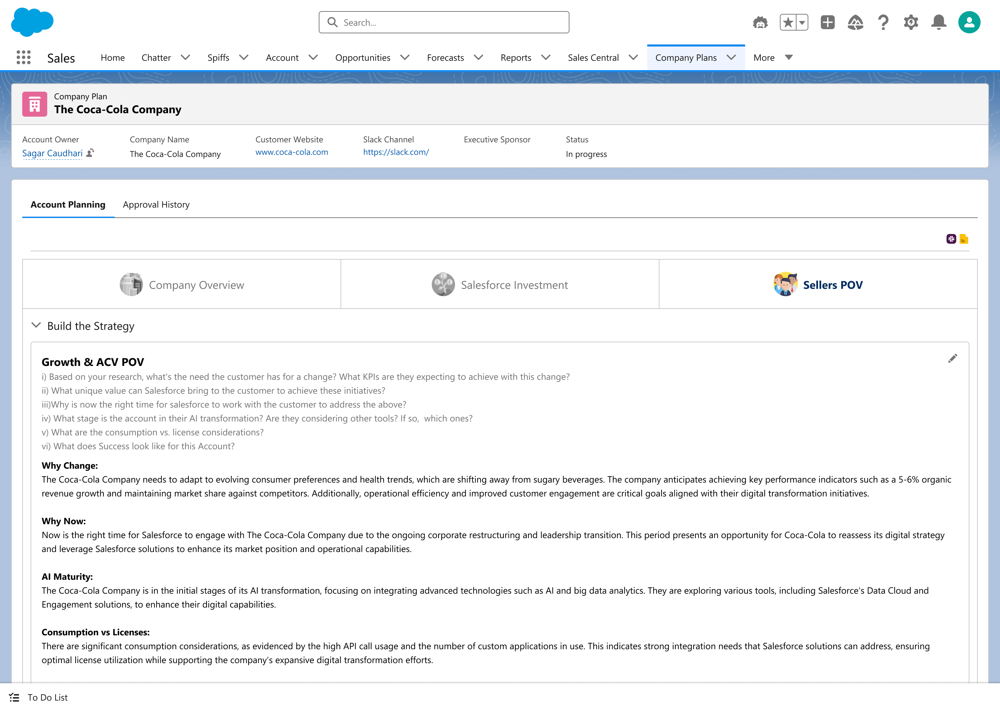
Screen 4 (The Plan): The resulting Org62 Account Plan, with the Sellers POV tab already populated with an AI-generated Growth & ACV strategy.
Presenting a hard constraint, no changes to the existing Q4 UI, as a design decision rather than a limitation kept the pitch focused on the real innovation: the agent-initiated flow and AI-assisted strategy, instead of getting derailed into a visual redesign conversation too early.
Carry the validated flow into the H1 visual redesign opportunity, and explore extending the agent-initiated pattern to other Org62 planning surfaces beyond Account Plans.
Landing a design that satisfied two very different stakeholder groups, AE daily users and senior business leaders, from a single low-fidelity mockup, without needing to touch the existing UI.
CQI (Commercial Quality Index) Tool
The pre-quoting process was manual and fragmented. I designed the CQI layout with in-line guidance banners, FMV Capture Ratio and Commercial Terms Score modules with error/warning states, and a Scenario Editing flow, ordering the page as guidance, then score, then detail.
The pre-quoting process was manual and fragmented. I designed the CQI (Commercial Quality Index) layout to bring guidance, scoring, and detail into one ordered flow for Account Executives (AEs) and Deal Desk reps, digitising Salesforce's deal structuring process.
The pre-quoting process for AEs and Deal Desk reps was highly manual, prone to inaccuracies, and inconsistent. The goal was to digitise deal structuring with holistic deal scoring, auto-generated customer footprints, and integrated pricing guidance based on fair market value (FMV), replacing separate, disconnected evaluations with one unified view.
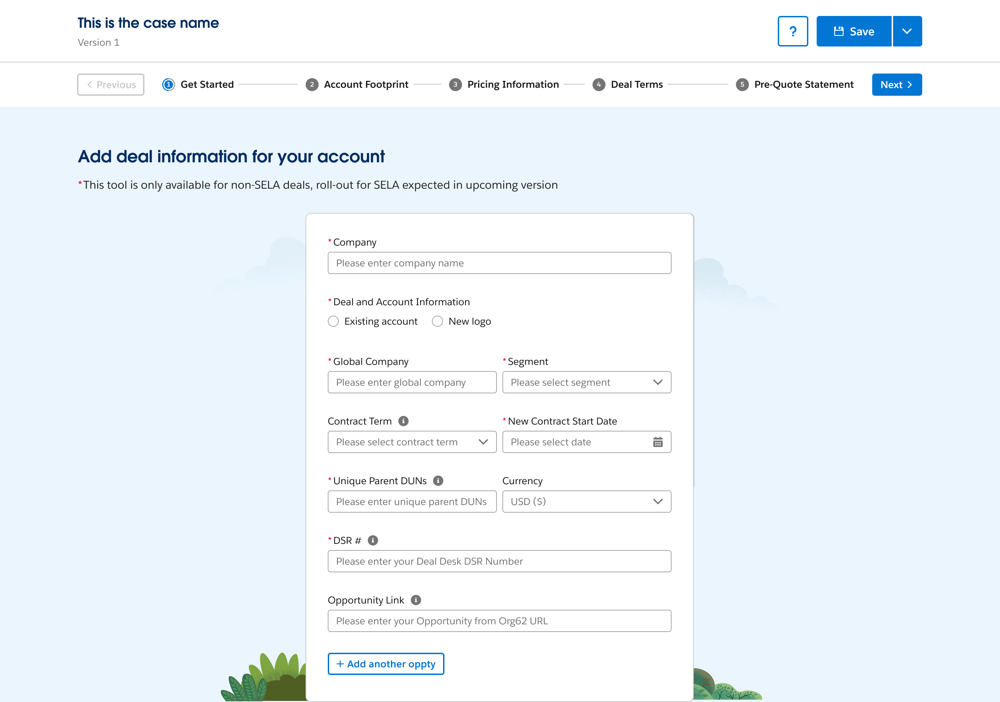
Get Started: AEs enter core deal and account information, kicking off the guided, step-by-step pre-quoting flow.
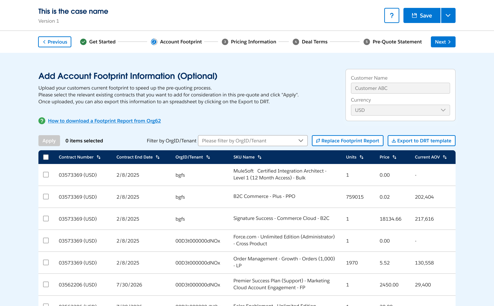
Account Footprint: uploaded contract data populates automatically, removing the need to manually look up a customer's existing footprint.
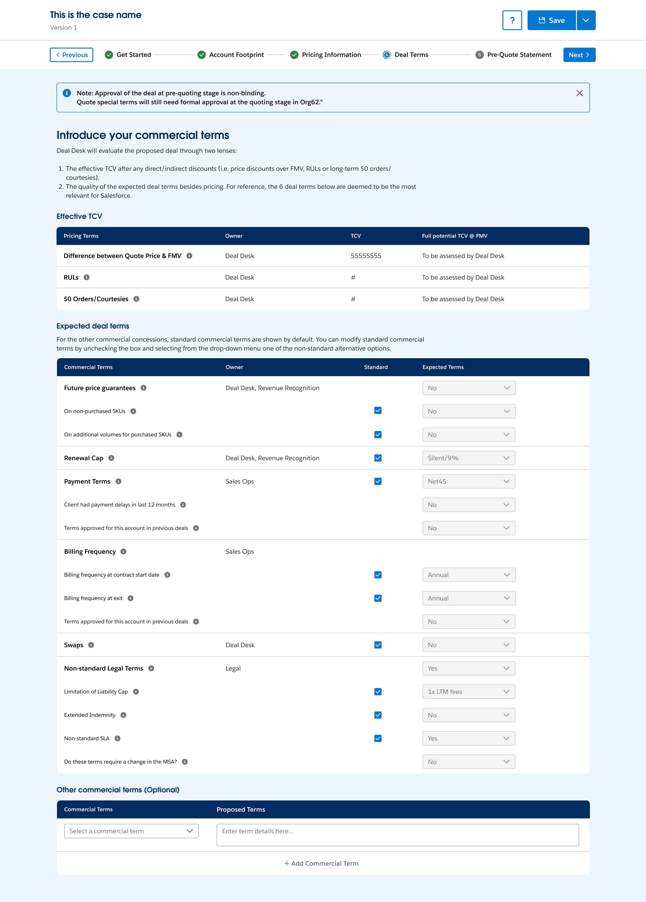
Deal Terms: effective TCV and expected commercial terms are laid out side by side, so Deal Desk can evaluate pricing and terms together.
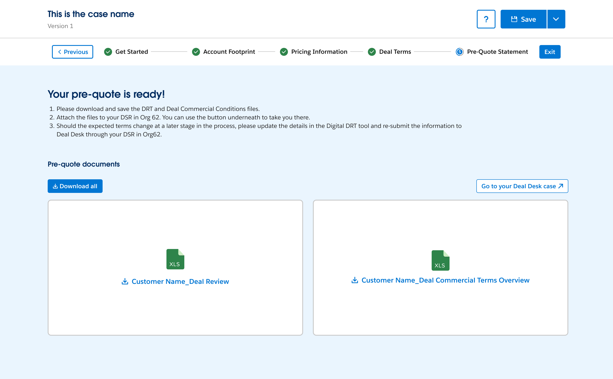
Pre-Quote Statement: the final step packages the deal review and commercial terms overview into documents ready to attach to the DSR in Org62.
Designing for a scoring tool means the interface has to earn trust. Clear error states and a logical reading order, guidance to score to detail, matter as much as the score itself.
Use learnings from the EMEA pilot to help define business requirements for pre-quoting functionality in OrgSF, the next-generation Lead to Cash Salesforce instance.
Turning a rigorous, holistic scoring model into an interface that AEs could trust and act on quickly, without it feeling like it was slowing them down mid-deal.